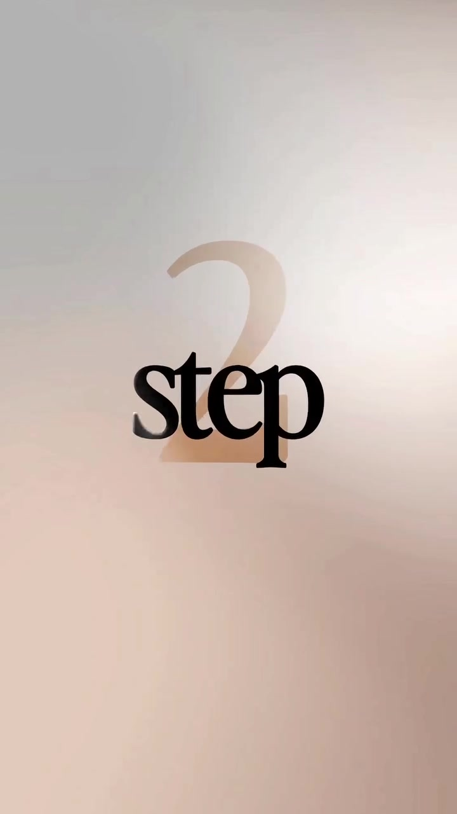
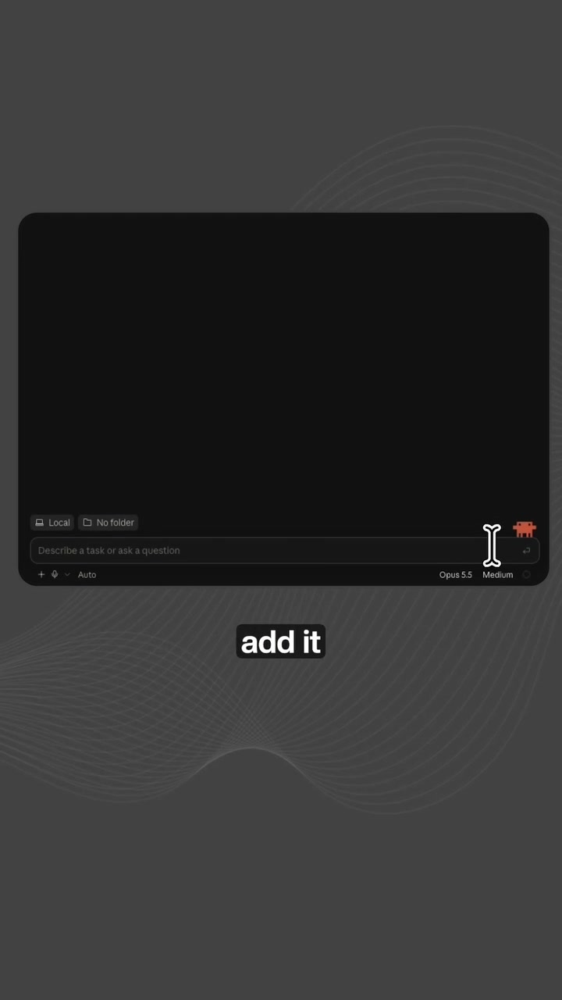

Frontend · Vibe-Coding
Vibe-Coding Stack: Claude Code + Framer Motion + UI UX Pro Max Pipeline
AI-generated websites often look flat, static, and templated because developers ask the LLM to generate plain CSS or Tailwind components without modern motion primitives. By pairing the Claude Code CLI with Framer Motion and a structured design system prompt harness (UI UX Pro Max), developers elevate basic vibe-coded sites into polished, fluid, agency-grade interfaces.
Visual Reference Stills


The 3-Step Setup Workflow
1
Initialize Claude Code CLI in Workspace
Install Claude Code globally to grant terminal and file-system read/write capabilities across the repo:
npm install -g @anthropic-ai/claude-code
claude
2
Add Framer Motion Primitives
Install motion dependencies so Claude can utilize springs, gesture handlers, and viewport triggers rather than static CSS:
npm install framer-motion clsx tailwind-merge lucide-react
3
Inject UI UX Pro Max Guidelines into Context
Provide Claude with design constraints to eliminate generic AI layouts:
- Enforce spring physics:
transition={{ type: 'spring', damping: 20, stiffness: 100 }} - Mandate micro-interactions on every button, card hover, and modal open
- Banish pure black (
#000000) in favor of tinted dark neutrals (e.g.#090d16) - Use optical tracking on headings and comfortable leading on body text